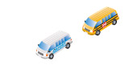
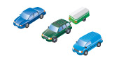
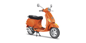

Notes: A "Z" air brake endorsement is required on a driver’s licence to operate any air brake equipped motor vehicle. An RV endorsement (“T” endorsement) allows drivers with class E, F and G licences to operate a recreational vehicle weighing up to 14,000 kilograms.
This chapter tells you what licence you need to drive in Ontario and how to get it, whether you are a new driver, a visitor or a new resident in Ontario.
If you are applying for your first licence, this chapter explains the graduated licensing system, how to apply for a licence, the tests you will have to pass and the driving privileges you will have at each licence level.
Requirements for driving in Ontario
Ontario residents:
- must be at least 16 years old
- must have a valid Ontario driver’s licence
If you have just become an Ontario resident, you have 60 days to continue to use your existing driver’s licence and apply for an Ontario driver’s licence.
If you have an Ontario Photo Card and apply for a driver’s licence, you must give up your Ontario Photo Card as part of the process. You cannot hold both an Ontario Driver’s licence and Ontario Photo Card.
Visitors to Ontario:
- must be at least 16 years old
- must have a valid driver’s licence from your home province, state or country
- must have an international driver’s permit from your own country if visiting Ontario for more than 3 months
- are not eligible for an Ontario driver’s licence
As of May 11, 2026, when you apply for your class G or class M licence, you will need to declare that:
- Ontario is your primary place of residence
- your presence in Canada is legal
Driver’s Licence Classification Chart
Class A
Allowed to drive any tractor–trailer combination
May also drive in class D and G
Diagram 1-1a-1
Class B
Allowed to drive any school purposes bus
May also drive in class C, D, E, F and G
Diagram 1-1a-2
Class C
Allowed to drive any regular bus
May also drive vehicles in class D, F and G.
Diagram 1-1a-3
Class D
A motor vehicle exceeding 11,000 kilograms gross weight or registered gross weight or any truck or combination provided the towed vehicle is not over 4,600 kilograms
May also drive in class G
Class D with RV restriction (“Q”)
Allowed to drive a recreational vehicle of any weight, but not allowed to drive other vehicles in Class D.
May also drive in class G
Diagram 1-1a-4
Class E
Allowed to drive any school purposes bus - maximum of 24-passenger capacity
May also drive in class F and G

Diagram 1-1a-5
Class F
Allowed to drive any regular bus - maximum of 24-passenger capacity - and ambulances
May also drive in class G
Diagram 1-1a-6
Class G
Allowed to drive any car, van or small truck or combination of vehicle and towed vehicle up to 11,000 kilograms provided the vehicle towed is not over 4,600 kilograms. A pickup truck towing a house trailer exceeds 4,600 kilograms, but the total combined weight of the truck and trailer does not exceed 11,000 kilograms is deemed a Class G vehicle.

Diagram 1-1b-1
Class G1
Level One of graduated licensing. Holders may drive Class G vehicles with an accompanying fully licensed driver with at least four years driving experience. Subject to certain conditions.
Class G2
Level Two of graduated licensing. Holders may drive Class G vehicles without accompanying driver but are subject to certain conditions.
Class M
Allowed to drive any motorcycles, including motor tricycles, limited-speed motorcycles (motor scooters) and motor-assisted bicycles (mopeds). Holders may also drive a Class G vehicle under the conditions that apply to a Class G1 licence holder.
Diagram 1-1b-2
Class M1
Level One of graduated licensing for motorcycles, including motor tricycles, limited-speed motorcycles (motor scooters) and motor-assisted bicycles (mopeds). Holders may drive a motorcycle under certain conditions.
Class M2
Level Two of graduated licensing for motorcycles, including motor tricycles, limited-speed motorcycles (motor scooters) and motor-assisted bicycles (mopeds). Holders may drive a motorcycle but only with a zero blood alcohol level. Holders may also drive a Class G vehicle under the conditions that apply to a Class G1 licence holder.
Class M with L condition
Holders may operate a limited-speed motorcycle or moped only.
Class M2 with L condition
Holders may operate a limited-speed motorcycle or moped only.

Diagram 1-1b-3
Class M with M condition
Holders may operate a motor tricycle only.
Class M2 with M condition
Holders may operate a motor tricycle only.
Diagram 1-1b-4
Notes:
A "Z" air brake endorsement is required on a driver’s licence to operate any air brake equipped motor vehicle.
An RV endorsement (“T” endorsement) allows drivers with class E, F and G licences to operate a recreational vehicle weighing up to 14,000 kilograms.
What kind of licence?
In Ontario, there are 12 different classes of licences. Each one qualifies you to drive a different type of vehicle. The class of licence you have must match the type of vehicle you are driving. You need a Class G licence to drive a car, van or small truck. You must have a Class G licence before you can be licensed to drive any other type of vehicle. The only exception is motorcycles. You may get a motorcycle licence (Class M) without first getting a Class G licence. The Driver’s Licence Classification Chart shows you what class of licence you need to drive different vehicles.
For information on the skills and knowledge you'll need to get a Class M motorcycle licence, study the Official MTO Motorcycle Handbook. You can get information on other kinds of licences - classes A, B, C, D, E and F - in the Official MTO Truck Handbook and the Official MTO Bus Handbook. If you want to drive a vehicle equipped with air brakes, the Official MTO Air Brake Handbook tells you how to qualify.
Some recreational vehicles have special licence requirements. If you plan to drive an off-road vehicle or snowmobile, read the Off-Road Vehicles section in this handbook. Recreational vehicles exceeding 11,000 kilograms but below 14,000 kilograms can be driven with a Class G, E or F licence with RV endorsement. Recreational vehicles of any weight, including those exceeding 14,000 kilograms, can be driven with a Class A, B, C or D licence, or a Class D licence with RV restriction.
You do not need a licence to ride a bicycle in Ontario; however bicycles are defined as vehicles in the Highway Traffic Act and bicyclists have rights and responsibilities similar to other vehicle operators under the Act. Information on safe cycling can be found in the Ministry of Transportation publications Cycling Skills and the Young Cyclist Guide.
Graduated licensing
New drivers applying for their first car or motorcycle licence enter Ontario’s graduated licensing system. Graduated licensing lets new drivers get driving experience and skills gradually. The two-step licensing process takes at least 20 months to complete.
To apply for a licence, you must be at least 16 years old, pass a vision test and pass a test of your knowledge of the rules of the road and traffic signs. After you pass these tests, you will enter Level One and get a Class G1 licence.
You must pass two road tests to become fully licensed. Passing the first road test lets you move to Level Two (Class G2), and the second one gives you full Class G driving privileges.
Applying for a licence
To apply for a licence, you must show proof of your legal name and date of birth (showing day, month and year of birth). Documents must be original and valid. Photocopies and expired documents are not acceptable.
Bring the documents to a DriveTest Centre or Travel Point (a temporary DriveTest Centre where there is no regional centre). Phone ahead to find out where the nearest Travel Point is and when it is open. You can also find it on the Internet at DriveTest Centre.
You must pay a fee when you apply. This fee includes the cost of the knowledge test, your first road test and a five-year licensing fee. There are more charges for your second road test and for any retests you may need to take. To schedule a road-test appointment, you must prepay the fee.
When you apply for your licence, you will be asked questions about your health. People with certain physical or medical conditions are not allowed to drive for safety reasons. If your physical or medical condition means you cannot be licensed, you will be told when you apply.
Once you have a licence, you should report any change in your medical condition that may affect your ability to drive safely. By law, doctors and optometrists must report the name and address of anyone over 16 who has a condition that may make it unsafe for him or her to drive.
For further details on applying for a licence, visit the Ministry of Transportation website.
Proof of identification
Any one of the following documents may be used to satisfy the requirement to provide proof of legal name and complete date of birth:
- Passport (Canadian or foreign)
- Canadian Citizenship Card with photo
-
Permanent immigration documents
- Permanent Resident Card (PRC)
- Record of Landing (Form 1000)
- Confirmation of Permanent Residence (Form IMM 5292)
-
Temporary immigration documents
- Student Authorization (IMM 1442)
- Employment Authorization(IMM 1442)
- Visitor Record (IMM 1442)
- Temporary Resident’s Permit (IMM 1442)
- Report Pursuant to the Immigration Act (IMM 1442 with photo)
Photos
The photo on your driver’s licence must meet certain standards. Your face must:
- be completely visible
- be free of any obstructions
- have a neutral and relaxed expression (do not smile)
- be facing straight at the camera (not tilted)
You can wear headwear for religious or medical reasons but it must not cover any part of your face. You may be asked to remove any other headwear or face wear, for example, hats, eyeglasses or headphones, when taking a photo for government-issued identification.
Your hair cannot cover your eyes.
If the photo does not meet the required standards, you may be asked to return to have your photo retaken.
Additional documents
Additional documents are required if the document presented from the previous list does not indicate the legal name or complete date of birth (day, month, year). The additional documents must provide proof of the missing or incomplete information.
The following documents are acceptable as proof of date of birth and legal name:
- Canadian or U.S. Birth Certificate
Proof of legal name
If additional documents presented to prove date of birth do not indicate the applicant’s legal name (for example, the name has been changed or is different on the two documents presented), the applicant will be required to provide additional documents as proof of legal name. The following additional documents are acceptable as proof of legal name:
- Marriage certificate (Canadian or foreign, government-issued)
- Change-of-name certificate
- Court order for adoption, change of name or divorce (must bear legal name, date of birth and court seal)
To confirm complete date of birth where no or only partial date of birth is available:
- Sworn affidavit stating reason why partial or no date is available, with supporting documents. Please contact ServiceOntario at
416-235-2999 or toll free at1-800-387-3445 (Canada-wide) for further information.
Note: Direct identification by a parent or guardian is not acceptable.
Graduated licensing requirements
Here are the rules you must follow at each level:
- Level One (Class G1)
- G1 knowledge test – checklist
- G1 exit test – checklist
- Level Two (Class G2)
- Road tests
- G2 exit test – checklist
Level One (Class G1)
Level One lasts 12 months. The Ministry of Transportation encourages all new drivers to take an approved driver-education course to help learn the proper driving skills and knowledge. You should begin your training as soon as you become a Level One driver so you can get as much driving experience as possible. If you pass an approved course, you can complete Level One in eight months. While at Level One, the following rules apply:
- You must not drive if you have been drinking alcohol. Your blood-alcohol level must be zero.
- You must not drive alone; an accompanying driver must sit in the front passenger seat. This is the only person who can be in the front seat with you while you drive. The accompanying driver must have a valid Class G (or higher) licence, at least four years of driving experience and a blood-alcohol level of less than .05% when accompanying you. Time spent at the Class G2 level, as long as the G2 licence was valid (not suspended), does count toward the accompanying driver’s four years of experience. The accompanying driver’s licence may have demerit points, but it cannot be suspended.
- Each person in the vehicle must have a working seatbelt.
- You must not drive on 400-series highways with a posted speed limit over 80 km/h. Also, you must not drive on certain high-speed roads including the Queen Elizabeth Way, Don Valley Parkway and the Gardiner Expressway in the Greater Toronto Area, the E.C. Row Expressway in Windsor and the Conestoga Parkway in Kitchener-Waterloo. However, if your accompanying driver is a driving instructor, you may drive on any road.
- You must not drive between midnight and 5 a.m.
You must pass a road test of your driving skills to move to Level Two. At this time, you will be given a Class G2 licence.
G1 knowledge test – checklist
Before taking the G1 knowledge test, make sure you have studied the Official MTO Driver’s Handbook.
Bring the following items to the test:
- Two pieces of identification
- Money for test fees – cash, debit or credit card
- Glasses or contact lenses (if you need to wear them to drive)
G1 exit test – checklist
Before taking the G1 exit test, make sure you have studied the Official MTO Driver’s Handbook.
Bring the following items to the test:
- Vehicle in good working order
- Money for test fees (if applicable)
- Glasses or contact lenses (if you need to wear them to drive)
- Arrive at least 30 minutes before Road Test appointment
Level Two (Class G2):
Level Two lasts at least 12 months. At this level, you have more privileges because of your driving experience.
At Level Two:
- You must not drive if you have been drinking alcohol. Your blood-alcohol level must be zero.
- Each person in the vehicle must have a working seatbelt.
In addition, the following restrictions apply between the hours of midnight and 5 a.m. to G2 drivers aged 19 years and under.
- In the first six months after receiving your G2 licence, you are allowed to carry only one passenger aged 19 or under.
- After six months with your G2 licence and until you obtain your full G licence or turn 20, you are allowed to carry up to three passengers aged 19 or under.
Exemptions: The passenger restrictions for G2 drivers aged 19 and under do not apply if you are accompanied by a fully–licensed driver in the front passenger seat, or if the passengers are members of your immediate family (a guardian or those related to you by blood, marriage, common–law relationship or adoption).
After 12 months at Level Two, you may take a road test to qualify for full licence privileges. You must pass this test to get a Class G licence.
Note: It is now law that all young drivers 21 and under, regardless of licence class, must have a blood-alcohol level of zero.
Note: A restricted Class M licence for limited-speed motorcycle and moped drivers allows licence holders to drive only a limited-speed motorcycle and moped. You are not permitted to drive a limited-speed motorcycle or moped on any driver’s licence other than a class M licence (including M1, M2(L),M2, M(L) or M). For more information on how to obtain a restricted Class M licence to drive a moped, and graduated licensing requirements, please read the Official MTO Motorcycle Handbook.
Road tests
Road tests check your driving skills in the vehicle and in traffic. You will be tested on your ability to follow the rules of the road and safe driving practices.
When you feel qualified to drive safely and confident enough to take your road test, schedule an appointment by internet, phone or in-person at any DriveTest Centre. You can contact the DriveTest Centre at
You must bring the appropriate vehicle to your road test. The vehicle must be fit, in proper working condition, plated and insured.
If you are a Level One driver, an accompanying driver must come with you to the test centre. If you are a Level Two driver, be prepared to take alternate transportation home in case you fail your road test and are unqualified to drive.
No pets or passengers other than the driver examiner are allowed in the vehicle during a road test. Driving instructors, friends, relatives and translators may not accompany you during the test.
All road tests have a set time frame. Before you begin your test, the examiner will inform you of the time you have to complete the test. You will not be asked to do anything illegal during the road test. The examiner will explain the test, and you should follow his or her instructions. The examiner is not allowed to coach you during the test, so if you have any questions, ask them before you begin.
Electronic driving aids such as automatic parallel-parking systems, lane monitoring, cruise control, and back cameras may not be used during the road test. On a road test, you are required to demonstrate the proper skills in operating a motor vehicle without the reliance of driving aids (for example, shoulder checks, mirror checks and so on).
At the end of each test, the examiner will give you a complete report of your skills, and explain any mistakes you have made. If you fail the test, the report will show you where you need to improve. When you have had more practice, you can make an appointment to take the test again. You must wait at least 10 days between tests.
G2 exit test – checklist
You must have highway driving experience (experience driving on highways with speed limits of at least 80 km/h) before taking the G2 exit test. You must complete a Declaration of Highway Driving Experience form, describing the highway driving experience you have, before taking the road test. Bring the following items to the test:
- Vehicle in good working order
- Money for test fees (if applicable)
- Glasses or contact lenses (if you need to wear them to drive)
- Arrive at least 30 minutes before Road Test appointment
Failure to attend road test, or short notice cancellation
If you cancel or reschedule your road test appointment with less than 48 hours notice, or if you fail to attend your appointment, your prepaid road-test fee will not be refunded. Under certain extenuating circumstances only (such as a death in your immediate family), the road-test fee will remain as a credit on your driving record.
Out-of-order road test
If your vehicle does not meet ministry standards for the purpose of a road test, or if there is a non-vehicle-related reason for which the examiner determines that the road test cannot be completed, the examiner declares the road test out-of-order. If your road test is declared out-of-order, you lose 50% of your road test fee. The other 50% of the fee remains as a credit on your driving record, and may be applied when booking a new road test. In order to book the new road test, you will have to pay the 50% of the fee deducted due to the out-of-order.
If you have any concerns that your road test may be declared out-of-order, contact the DriveTest Centre before your scheduled test to discuss it.
New Ontario residents
If you are a new resident of Ontario and have a valid driver’s licence from another province or country, you can use that licence for 60 days in Ontario. If you want to continue to drive after 60 days, you must get an Ontario driver’s licence.
Licence Exchange for Countries with Reciprocating Jurisdictions
Ontario has licence-exchange agreements with every Canadian province and territory (including Canadian Forces Europe). There are also agreements with Australia, Austria, Belgium, Croatia, France, Germany, Great Britain, Hungary, Denmark, Ireland, the Isle of Man, Japan, New Zealand, Northern Ireland, Republic of Korea, Kosovo, Switzerland, Taiwan, Ukraine and the United States.
Drivers will receive a full Class G licence, provided they have an equivalent class licence. If you have fewer than two years of driving experience, you may get credit for your experience and enter Level Two of the graduated licensing system. Once you have a total of two years of driving experience, you may take the Level Two road test to earn full driving privileges.
Applicants from Non-reciprocating Jurisdictions
Applicants for an Ontario driver’s licence may present a valid foreign driver’s licence, and must provide acceptable proof of identity, pay all applicable fees, and pass a vision test and knowledge test to obtain a G1 licence.
Starting on July 1, 2026, applicants from a jurisdiction that does not have an exchange agreement with Ontario can claim a maximum of 12 months of driving experience by presenting an original, valid foreign driver’s licence.
Depending on the length of previous experience declared, there are varying requirements. For example:
-
If your foreign driver’s licence was issued 6 months before you apply for an Ontario licence, but you have more than 6 months of total driving experience in that jurisdiction, you must provide an acceptable letter of authentication to receive credit for your full driving experience (up to a maximum of 12 months). The authenticated letter must be:
- from within the previous 6 months
- from your embassy, consulate or licencing agency
- in English or French
- With at least 12 months of foreign driving experience, you are eligible to take the Class G2 road test immediately. You must then wait at least 12 months before taking the Class G road test to earn the full Class G licence.
- With 6 months of foreign driving experience, you must hold the Class G1 for another 6 months, for a total of 12 before being eligible to take the Class G2 road test. The 12-month waiting period will be reduced to eight months with the successful completion of a ministry-approved, beginner driver education course
- Only experience within the past three years up to a maximum of 12 months may be credited.
Driving customs vary from place to place. That is why experienced drivers from other countries should familiarize themselves with Ontario’s laws. The Official MTO Driver’s Handbook and the Ministry of Transportation website are great resources.
Could You Pass?
The rest of this handbook gives you information you need to pass your tests and to keep your driving privileges once you get your licence. The written test may ask you about:
- Seatbelts
- Traffic signs and lights
- Emergency vehicles
- How to use headlights
- Speed limits
- Getting on or off a freeway
- What drivers must do when they meet streetcars and school buses
- Driver licence suspensions
- The demerit point system
- Passing other vehicles
- Collision reporting
- Sharing the road with other road users
- Rules of the road
The road tests will test how well you use your knowledge while driving. You will be tested on:
- Starting, stopping and turning
- Traffic signs and lights
- Passing vehicles, including bicycles, and driving in passing lanes
- Travelling through controlled and uncontrolled intersections
- Parallel parking and reversing
- Foreseeing hazardous conditions and being ready for them
- Other safe driving practices
Make sure you know the information in this handbook before you take these tests. Sample test questions that could appear on the knowledge test.
Choosing a driving school
As a new driver, your choice of professional driving instruction may be the best way to put yourself safely in the driver’s seat.
A beginner driver education (BDE) course in a driving school that has been approved by the provincial government can teach you the skills and attitudes you need to be a safe and responsible driver. The BDE course may also make you eligible to take your road test sooner and allow you to save money on insurance premiums.
As well as teaching the basics, driver training emphasizes strategic driving techniques, positive driving attitudes and behaviour, avoiding driver distractions, risk perception and management, freeway driving, night driving and driving in adverse conditions. Most programs are designed for new drivers, but many driving schools also provide courses and services to upgrade your skills.
If you graduate from an approved BDE course, this will be noted in your driver’s licence history, and will reduce the time you must spend at Level 1 by four months. It may also bring you savings on your car insurance.
All ministry-licenced driving schools offer in-class and in-car training for a fee. All lessons are taught by a ministry-licensed driving instructor.
Ministry-approved BDE courses, offered by driving schools, must last a minimum of 40 hours. This may consist of at least 20 hours in-class, 10 hours in-vehicle and 10 hours of flexible instruction that may include the following:
- Classroom driving instruction.
- Computer-based instruction.
- In-vehicle instruction.
- Driving simulator instruction.
- Home links (homework).
The ministry licenses all driving schools offering a BDE course in Ontario. Licences are renewed every three years, if driving schools continue to meet legislative and program requirements. Only licensed instructors working for licensed schools can teach the BDE course.
All ministry-approved driving schools are listed on the ministry’s website.
Note: The ministry also lists revoked driving schools that are not on the list of approved schools.
Look at the website for an active ministry-approved driving school that offers high-quality instruction and a comfortable learning environment. Please make sure the school offers a ministry-approved BDE course of a minimum of 40 hours. The school should also be equipped with up-to-date videotapes, DVDs, projectors, overheads, computers, and other audio-visual aids.
To help you choose the best driving school and course for you, please use the following checklist:
- Course information package
- Personalized program
- Adequacy of classroom facilities and related amenities
- Low student/teacher ratio
- Audiovisual equipment
- In-class topics covered
- In-vehicle topics covered
- Flexible instruction covered
- Instructor qualifications and experience
- Regular instructor upgrading
- Student progress and evaluation reports
- Minimum 20 hours of classroom instruction, 10 hours behind-the-wheel instruction and 10 hours of flexible instruction
- Modern training materials
- Use of vehicle for road test
- Tuition receipts
- Clear school-contract statements regarding the cost of every aspect of the course, including use of vehicle for road test and any subsequent road test
- Testimonials/references – history of excellent teaching, proper treatment and respect of all students with no discrimination of any type (see the Ontario Human Rights Code)
- Number of years in business
- Consumer protection insurance
Protect yourself from fraud and identity theft
After getting your driver’s licence, do not:
- share your licence information with any unauthorized person.
- post images of your licence online.
For accurate road tests information, only use ontario.ca and drivetest.ca.
Important things to note:
- The Ministry of Transportation and DriveTest do not charge fees to book road tests
-
Do not trust sites or services that:
- promise a driver’s licence without any testing
- guarantee successful road test results
- charge more for a driver’s licence than the fees posted on ontario.ca and drivetest.ca
Summary
By the end of this chapter, you should know:
- The legal requirements you must meet to obtain a driver’s licence
- The different licence classifications and what type of vehicle they permit you to drive
- The identification you need to provide when applying for a driver’s licence
- The restrictions and testing requirements under the graduated licensing system